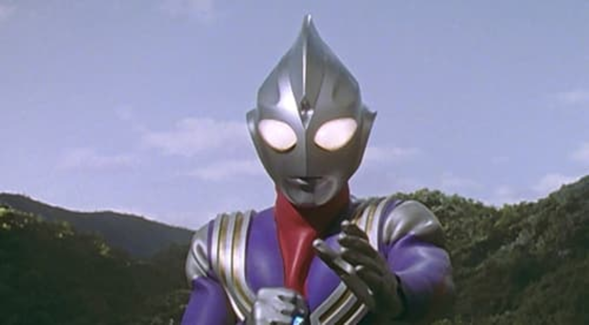
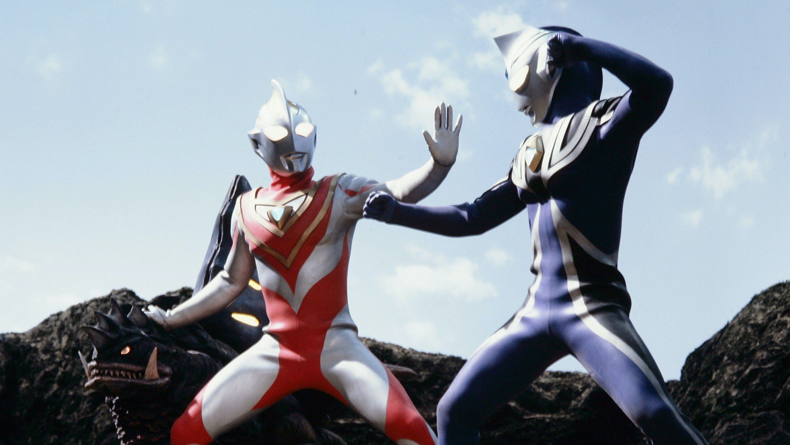
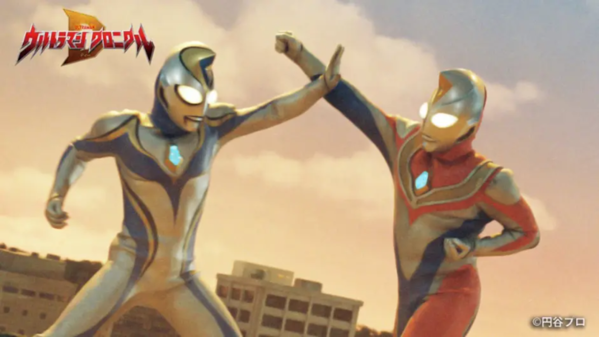

Synopsis



TV Series Intro

Ultraman Tiga (1996)
Synopsis
At the beginning of the 21st century, there will be no more invasions and wars on the earth, and the long-awaited peace of mankind has finally arrived. However, as predicted by the time capsule sent by You Lian, the head of the ultra-ancient guard regiment, "Gorzan" and "Merba" appeared. In the pyramid, the target of the monster's attack, three huge stone statues were found. Two megalithic statues were destroyed by monsters. At this critical juncture, the Dagu team members were surrounded by light and melted into the remaining stone statues - Ultraman Tiga woke up.
Kazuo Tsuburaya
Creator

Ultraman Dyna (1997)
Synopsis
The story takes place on Earth in 2017. Asuka Shin (Tsuruno Masashi) inherited his father's pursuit of justice. Under Yumi's recommendation, Shin became a member of SUPER GUTS and shouldered the responsibility of defending the earth against aliens. 's task. A monster with powerful destructive power appeared, and Xin and his teammates fought fiercely against it. However, the power disparity was huge, and Xin was in danger. At this critical moment, Xin transformed into a giant of light, and the combat power increased sharply. The result was the enemy. After that, Xin embarked on the road of justice as a giant of light.
Kazuo Tsuburaya
Creator

Ultraman Gaia (1998)
Synopsis
In 2000, the genius boy Gaoshan Gameng met the mysterious red light giant in an experiment. XIG didn't work when the first attack of the saboteurs came. At this time, I dreamed that I fell into the tunnel of light and saw the giant again. He hoped that the giant would give the power to defend the earth. So, the giant and my dream merged into one, and fought against the destroyer. After defeating the Destruction Invitational Body, I dreamed to join XIG, and the giant was named "Gaia". But at this time, another young man, Hiroshi Fujimiya, also has the power to transform into a giant "Aguru". The two giants and the destroyer will start a series of battles.
Kazuo Tsuburaya
Creator
Most Impress Episodes
Ultraman Tiga

Episodes 1 : The One Who Inherits the Light
The appearance of two monsters, Gorzan and Melba, broke the peace of earth. The monsters have landed in Japan, and they are aiming for a certain place. There are relics of super ancient civilizations that no one knows about! The victorious team members found the legendary giant Tiga here!
Ultraman Dyna

Episodes 31 : Deathmatch! Dyna vs. Dyna
Gregory is a polymorphic alien warrior who travels the universe in search of opponents to challenge and prove his prowess. Upon arriving on Earth, Gregory challenges Ultraman Dana to cement his reputation to see who is the better fighter, but loses the ensuing duel. After accepting his loss with dignity, Gregory returned to space to continue his journey.
Ultraman Gaia

Episodes 18 : Agul Vs Gaia
Fujimiya Hiro also transformed into Ultraman Aguru, and used his own abilities to revive the Zhongnel monster sleeping in the ground. A giant creature, Digrob, fell from the sky and attacked Tokyo. Gaia Ultraman is facing an unprecedented crisis. At the same time, Ultraman Aguru destroyed the Zhongner monster. Is he an enemy or a friend? How will Ultraman Gaia resist the monster attack?